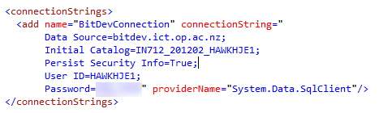

- Add a class called PersonInfo - this will hold values that we get from the database

- When the dialog shows click Yes to create the App_Code folder for your classes

- For each attribute in your table create a property for that attribute, as shown in the example below

- create a new class called Person, this class will control the person table

9a. In the person class you will need to add methods that will modify the tblPerson table, you will need one for each action you perform, in this case we will be adding, updating, selecting, and deleting data from the database. Firstly you will need to create local variables that get the connection, and pass the connection in through your constructor.
public Person(SqlConnection connection) { this.connection = connection; this.command = new SqlCommand(); }Below we have a method that will select all the people in the database called Get that has a pass-by-reference parameter that stores values in a List<PersonInfo> object:
//Grabbing results from the database by reference, the data passed by reference will return a List<PersonInfo> object public void Get(ref List<PersonInfo> people) { //Open connection connection.Open(); //Call procedure to get people from the database command.CommandText = "SELECT PersonID, FirstName, LastName FROM tblPerson"; //Execute and get data from query SqlDataReader sr = command.ExecuteReader(); //Fill people list while (sr.Read()) { //Create a temporary PersonInfo object PersonInfo personInfoTemp = new PersonInfo(); //give person info object values from query personInfoTemp.PersonID = int.Parse(sr["PersonID"].ToString()); personInfoTemp.FirstName = sr["FirstName"].ToString(); personInfoTemp.LastName = sr["LastName"].ToString(); //add data to pass by reference list people.Add(personInfoTemp); } //Close connection connection.Close(); }9b. Add another method called Add that will allow you to add people to the database:
/Add users to the database by creating a PersonInfo object before adding the item to //the database public void Add(PersonInfo personInfo) { connection.Open(); command.CommandText = "INSERT INTO tblPerson (FirstName, LastName) VALUES (@firstName, @lastName)"; command.Parameters.Add("firstName", personInfo.FirstName); command.Parameters.Add("lastName", personInfo.LastName); connection.Close(); }Other methods you will need are:
void Get(PersonInfo person, int id)
– which will get a person by ID
void Delete(int id)
– which will delete a person from the databse by ID
void Update(PersonInfo person)
– which will update a person by ID
- Modify your web.config file and add your connection string
